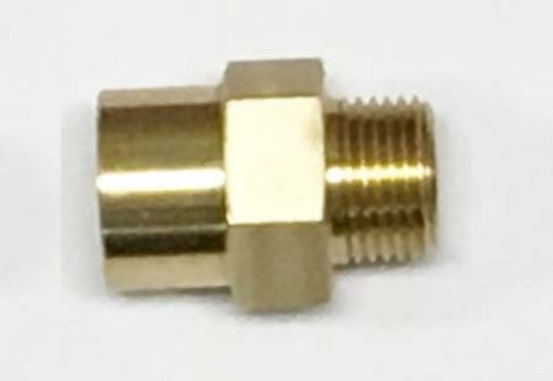
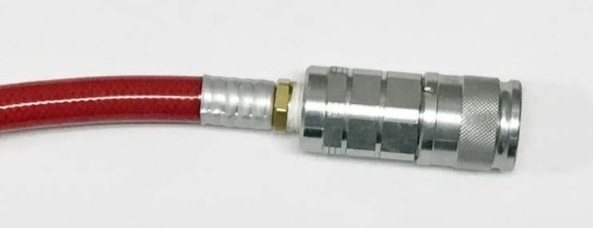
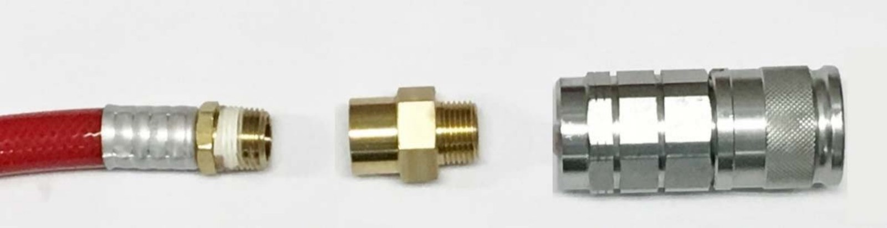
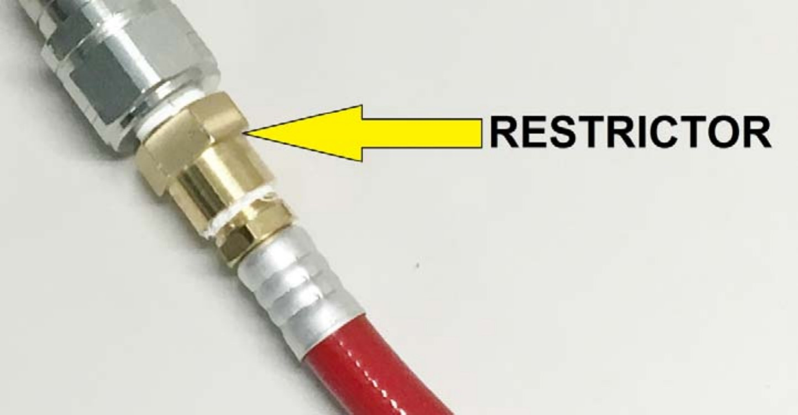

Doc no. MOC-TSB-17-05 // Vol. 17 No. 05 // Jun 26, 2017 // Transmission
Fluid Flow Restrictor for High Flow transmission services using Smart Tech II ATF Machines
New94943
MOC has designed a new Fluid Flow Restrictor to be used with the Smart Tech® II ATF machines when performing cooler line flush services on "High Flow" transmissions such as the GM 6L80. The devise is designed to eliminate potential underfill issues when added to the red service hose on the Smart Tech® II ATF machine. and in now available in stock. See page 2 for assembly instructions.
What's new
The flow restrictor must be attached to the end of the Red Service Hose or it will not function properly.
Contact
For more information, contact the Machine & Equipment Department at 866.244.6621.




Part numbers
| Part No. | Description | Notes |
|---|---|---|
| 94943 | Restrictor, High Flow Transmission |